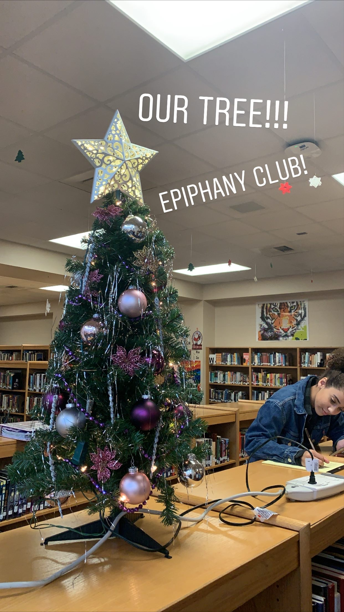
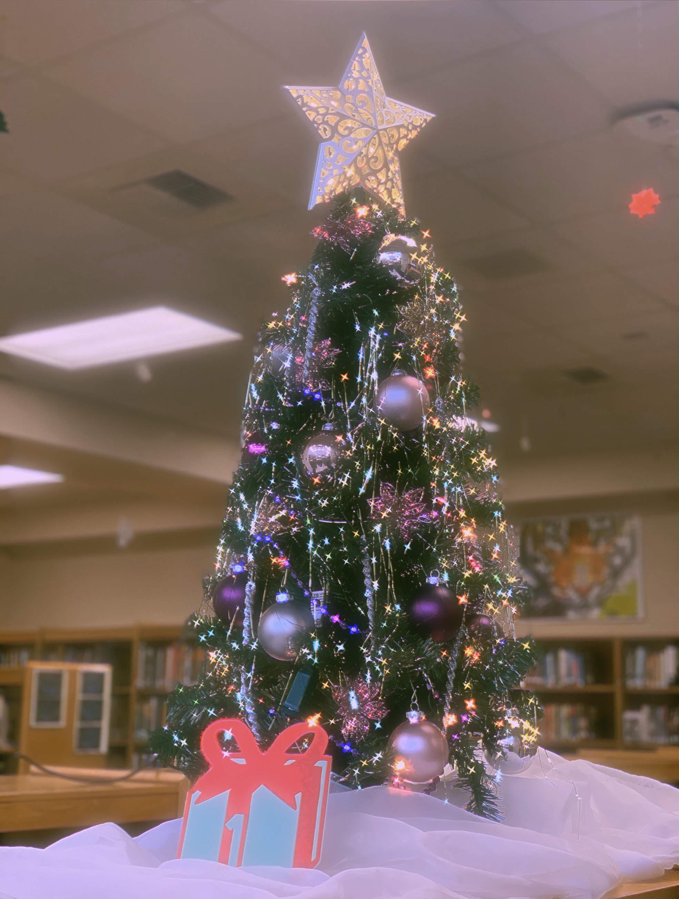
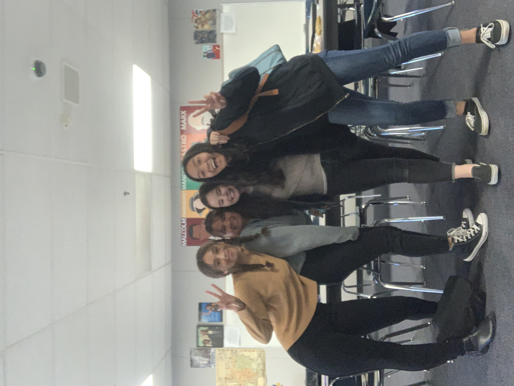
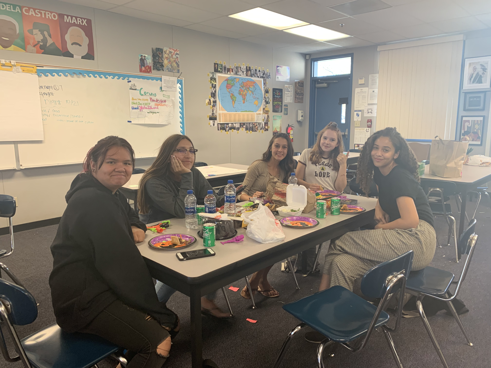
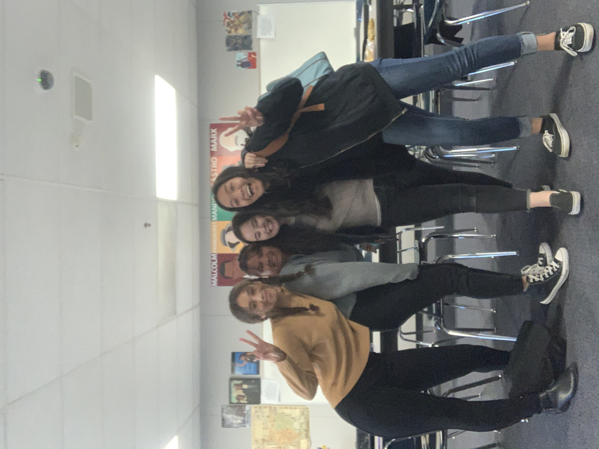
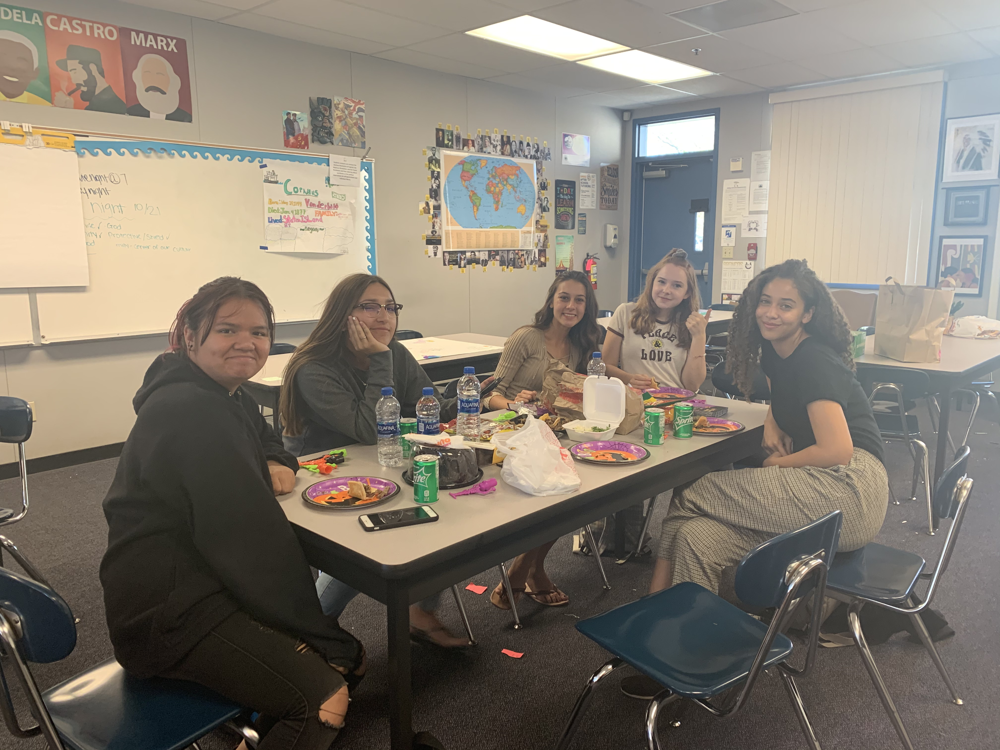

Sayaka Light
I am a hard worker open to new envioronments and work situations. I am a fast learner and easy to get along with. I perservere in difficult situations and work endlessly until a suitable solution is found. I respond well to challenges and am always ready to face them. I am a leader that is always welcome to hearing new ideas and finding ways to improve the work I produce.
My work experience includes customer service as well as front desk management at Loma Linda University Medical Center- Murrieta. I would aid vistors to find their loved ones in the hospital as well as help discharge patients when they are fully recovered. I would also assist in cleaning and sanitizing equiptment and restocking materials.
My education includes a high school diploma from Vista Murrieta High School. I am currently a first year at Univeristy of California Riverside majoring in Neuroscience. I aspire to go to medical school to further my education and become a Neurologist.
Experience
Front Desk Worker
• Escorted visitors to where they need to go
• Checked in patients
• Discharged patients
President
• Leader of a club that supported mental health
• Organized numerous activities for the club throught the year
Lawyer
• Was a part of the Law Society Club in High School
• Reviewed a case that was played out as a real one in a fake court
• Worked with other teammates to find a solution to the case and come up with ways to defend our client
Education
Univeristy of California Riverside
Portfolio






